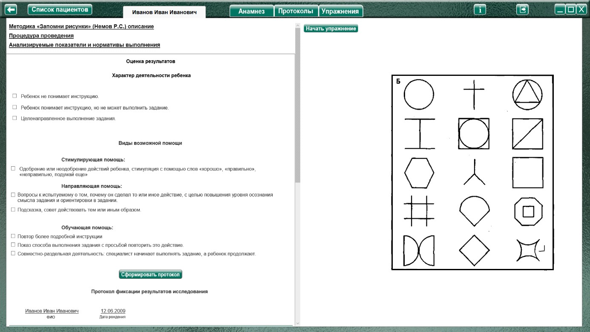
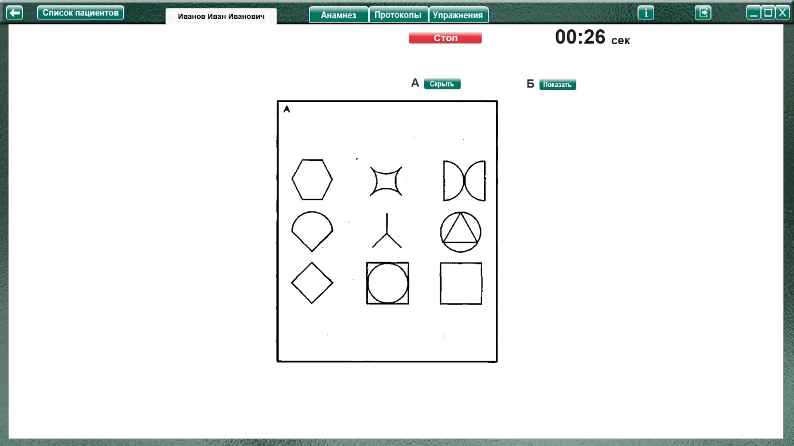
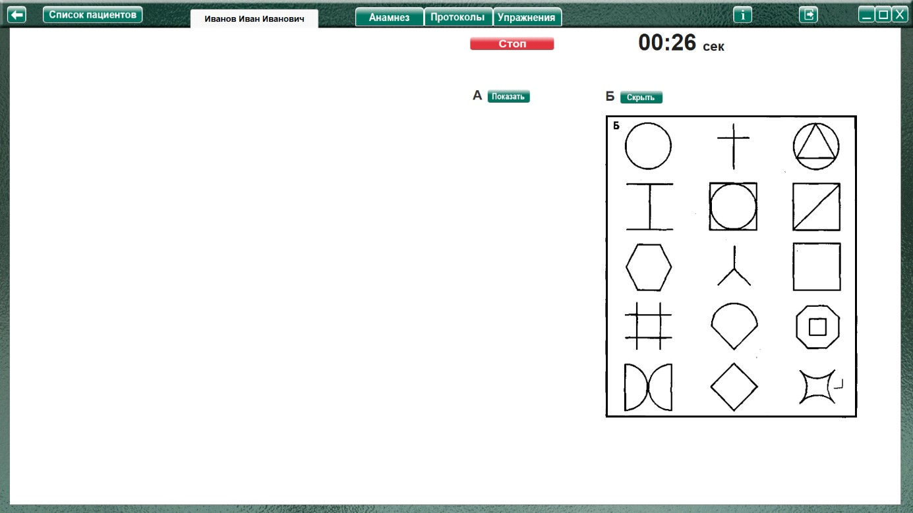

Методика "Запомни рисунки" (Немов Р.С.)
Методика "Запомни рисунки" (Немов Р.С.) описание
Процедура проведения.
Дети в качестве стимулов получают картинки, представленные на рис. А.
Им дается инструкция примерно следующего содержания:
«На этой картинке представлены девять разных фигур. Постарайся запомнить их и затем узнать на другой картинке (рис. Б), которую я тебе сейчас покажу. На ней, кроме девяти ранее показанных изображений, имеется еще шесть таких, которые ты до сих пор не видел. Постарайся узнать и показать на второй картинке только те изображения, которые ты видел на первой из картинок».
Время экспозиции стимульной картинки (рис. А) составляет 30 сек. После этого картинка «А» заменяется на картинку «Б». Эксперимент продолжается до тех пор, пока ребенок не узнает все изображения, но не дольше чем 1,5 мин.
Анализируемые показатели и нормативы выполнения
Оценка результатов
10 баллов — ребенок узнал на картинке Б все девять изображений, показанных ему на картинке А, затратив на это меньше 45 сек.
8-9 баллов — ребенок узнал 7-8 изображений за время от 45 до 55 сек.
6-7 баллов — ребенок узнал 5-6 изображений за время от 55 до 65 сек.
4-5 баллов — ребенок узнал 3-4 изображения за время от 65 до 75 сек.
2-3 балла — ребенок узнал 1-2 изображения за время от 75 до 85 сек.
0-1 балл — ребенок не узнал на картинке Б ни одного изображения в течение 90 сек и более.
Выводы об уровне развития
10 баллов - очень высокий.
8-9 баллов - высокий.
4-7 баллов - средний.
2-3 балла - низкий.
0-1 балл - очень низкий.
Оценка результатов;
Характер деятельности ребенка:
Виды возможной помощи:
Стимулирующая помощь
Направляющая помощь:
Обучающая помощь:
Протокол фиксации результатов исследования
_________________________________ _______________
ФИО Дата рождения
Методика |
Запомни рисунки |
Автор методики (адаптации, модификации) |
Немов Р.С. |
Цель: |
определение объема кратковременной зрительной памяти. |
Дата / специалист |
|
Результат: баллы (макс.) / вывод об уровне развития |
|
Примечание |
|
Процесс выполнения диагностической методики |
|
Характер деятельности ребенка |
Виды помощи |
Баллы
|
Логика заполнения протокола
Заполняется автоматически
Имя специалиста – логин при входе в программу.
Дата – дата и время прохождения упражнения в формате дд.мм.гггг. чч:мм
Ячейки «Характер деятельности ребенка», «Виды помощи» заполняются в зависимости от выбора специалиста в поле «Оценка результатов» либо самостоятельно.
Остальные ячейки заполняются (правятся) специалистом самостоятельно.
Выполнение упражнения.

После ознакомления ребенка с заданием (согласно пункту «Процедура проведения») нажать кнопку «Начать упражнение» (для запуска секундомера и открытия упражнения на весь экран).

Выполнить задание согласно пункту «Процедура проведения». Через 30 секунд скрыть рисунок «А» и показать рисунок «Б». Кнопка «Показать/скрыть рисунок Б» переключает отображение картинок, а кнопка «Показать/скрыть рисунок А» показывает или скрывает ТОЛЬКО рисунок «А», давая возможность при необходимости отобразить оба рисунка

После выполнения задания нажать кнопку «Стоп», останавливая секундомер и открывая поле оценки результата. При необходимости выбрать характер деятельности и виды помощи, и нажать кнопку «Сформировать протокол» Произвести оценку результата (заполнить оставшиеся ячейки протокола) согласно пункту «Анализируемые показатели и нормативы выполнения».